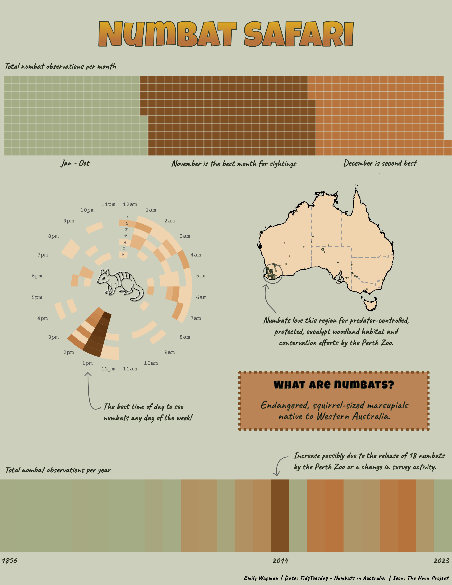

Numbats in Australia
Background
After two months clunking and rattling around Western Australia in an old Landcruiser with my boyfriend, it was clear that the country had some charmingly odd and terrifying wildlife. (However, locals deemed it more necessary to warn us about accidents from hitting cows on the road than the venemous snails and stonefish in the water). It was also clear that many of these incredible native species were under serious threat of disappearing from threats such as introduced predators, fire, habitat fragmentation, and climate change. As an environmental scientist, it was fascinating to learn about the conservation challenges of another country and heartbreaking to hear that these quintessential, Australian wildlife experiences – even the poisonous ones – could so easily disappear. Months after returning home, my boyfriend was still calling everyone mate and eating vegemite, and I was still thinking about wildlife conservation in Australia.
Data and Goals
My data visualization class provided the perfect opportunity to explore my obsession through data. I found the Numbats in Australia dataset from the TidyTuesday github repository, which was originally sourced from The Atlas of Living Australia. The dataset has information on numbat sightings all the way from 1856 to the beginning of 2023. Numbats are small marsupials listed as endangered and the Perth Zoo and Western Australia Department of Biodiversity, Conservation and Attractions lead recovery efforts in Western Australia. For my infographic, I wanted to show the best conditions and locations to see a numbat for fellow wildlife enthusiasts while also providing some context on numbat conservation.
My Infographic
Approach
Graphic form
I primarily used alternative chart times to make my visualization more artistic while still conveying the key results from the analysis.
Waffle Chart - I chose this format instead of my original plan, a line graph, because I thought it visually created an interesting balance with the bottom biodiversity chart. I also thought it was interesting to see the differences in observation numbers.
Circular Chart - I was inspired by Dan Oehm’s work in the UFO TidyTuesday dataset. I thought this was a great format to show both the best time of day and day of the week for numbat sightings.
Map - I chose a map of Australia because I wanted to visualize the overall distribution of numbats. I added the territory lines because I thought it would be in interesting additional detail.
Biodiversity Chart - I chose a biodiversity chart because I thought it would be an interesting artistic addition. I also thought the stripes represented the pattern of a numbat.
Text & typography
I chose 3 fonts for my infographic. I wanted the theme of my infographic to be fun. For my header, I chose Luckiest Guy from Google Fonts because it is bold and looked adventurous. For my annotations, I chose Caveat from Google Fonts because I wanted a font that looked like handwriting to make the visualization look more natural and organic. I chose Courier Prime for the numbers on my cirle graph because I wanted a monospaced font.
Theme and Layout
I decided to make the waffle chart in biodiversity chart borders at the top and bottom to balance each other out visually and then put the 2 others parts in the middle. I thought it would look less balanced and too cluttered if I put both of the long graphs next to each other at the top or bottom. I used annotations instead of chart titles to reduce clutter.
Color
I chose a palette of Browns and greens because I thought it reflected the natural colors in Australia. Greens reminded me eucalyptus and browns reminded me of the Outback. I wanted the overall infographic to have a natural appearance.
Contextualizing the data
Contextualize the data I added annotations to highlight key takeaways and added an icon to show what a numbat looks like.
Centering my primary message
To emphasize my main takeaways, I used annotations. On each graph, I noted what the best place, month, or time of day is to see numbats and gave some background and explanation to help interpret the results.
Considering accessibility
I added alt text for each of my visualizations and used annotations to point out the main takeaways in case the color contrasts are not visible.
Code
View the code for my visualizations by expanding the code chunk below.
Code
# Load libraries
library(tidyverse)
library(ggplot2)
library(here)
library(readr)
library(sf)
library(ozmaps)
library(dplyr)
library(janitor)
library(showtext)
library(showtext)
library(waffle)
# Get the Data
tuesdata <- tidytuesdayR::tt_load('2023-03-07')
tuesdata <- tidytuesdayR::tt_load(2023, week = 10)
numbats <- tuesdata$numbats
# Or read in the data manually
numbats <- readr::read_csv('https://raw.githubusercontent.com/rfordatascience/tidytuesday/main/data/2023/2023-03-07/numbats.csv')
# Write csv
write_csv(x = numbats, file = here("data", "numbats.csv"))
# Color Palette
brown1 = "#f0d4af"
brown2 = "#d9a066"
brown3 = "#b8743c"
brown4 = "#7f4f24"
brown5 = "#582f0e"
green1 = "#c2c5aa"
green2 = "#a4ac86"
green3 = "#656d4a"
green4 = "#414833"
green5 = "#333d29"
# Add fonts
font_add_google(name = "Sarala", family = "sarala") # Not used in infographic
font_add_google(name = "Courier Prime", family = "courier_p")
#~~~~~~~~~~~~~~~~~~~~~~~~~~~~~~~~~~~~~~~~~~~~~~~~~~~~~~~~~~~~~~~~~~~~~~~~~~~~~~~~
# Map
#~~~~~~~~~~~~~~~~~~~~~~~~~~~~~~~~~~~~~~~~~~~~~~~~~~~~~~~~~~~~~~~~~~~~~~~~~~~~~~~~
# Get map features/join to state dataset
points_sf <- st_as_sf(numbats, coords = c("decimalLongitude", "decimalLatitude"),
crs = 4326, na.fail = FALSE)
points_sf <- st_transform(points_sf, st_crs(ozmap_states))
# Create map
map_numbats <- ggplot() +
geom_sf(data = ozmap_states, fill = brown1, color = "grey60", linewidth = 0.5, linetype = 2) +
geom_sf(data = ozmap_country, fill = NA, color = "black", linewidth = 0.4) +
geom_sf(data = points_sf, color = green5, size = 1, alpha = 0.7) +
scale_fill_viridis_c(option = "plasma") +
labs(title = "Numbat Sightings",
subtitle = "Southwestern Australia has the greatest number of numbat
sightings.") +
theme_void() +
theme(
plot.title = element_text(family = "sarala", face = "bold", size = 14),
plot.subtitle = element_text(family = "sarala", size = 10)
)
showtext_auto(enable = TRUE)
map_numbats
pdf(here("map2.pdf"), width = 8, height = 6); print(map_numbats); dev.off()
showtext_auto(enable = FALSE)
#~~~~~~~~~~~~~~~~~~~~~~~~~~~~~~~~~~~~~~~~~~~~~~~~~~~~~~~~~~~~~~~~~~~~~~~~~~~~~~~~
# Circular chart
#~~~~~~~~~~~~~~~~~~~~~~~~~~~~~~~~~~~~~~~~~~~~~~~~~~~~~~~~~~~~~~~~~~~~~~~~~~~~~~~~
# Add column for total observations per day and opacity value
numbats_time <- numbats |>
group_by(hour,wday) |>
summarise(total_daily_obs = n(), .groups = "drop") |>
drop_na() #|>
#mutate(opacity_val = (total_daily_obs / max(total_daily_obs)))
# Make the day of the week a factor and reorder for labels, remove duplicate days
numbats_time$wday <- factor(
numbats_time$wday,
levels = c("Mon","Tue","Wed","Thu","Fri","Sat","Sun")
)
numbats_time$wday_num <- as.numeric(numbats_time$wday)
days_df <- numbats_time |>
distinct(wday_num, wday)
hour_df <- data.frame(
hour = 0:23,
label = tolower(format(strptime(0:23, "%H"), "%I%p"))
)
hour_df$label <- sub("^0", '', hour_df$label)
plot_day <- ggplot(data = numbats_time) +
geom_tile(aes(x = hour,
y = wday_num,
fill = total_daily_obs),
#fill = as.numeric(numbats_time$total_daily_obs),
height = 1,
width = 1) +
scale_fill_gradientn(
colours = c(brown1, brown2, brown3, brown4, brown5),
trans = "log"
) +
geom_text(data = hour_df, aes(x = hour, y = 9, label = label),
size = 4, color = "gray30", family = "courier_p") +
geom_text(data = days_df, aes(x = 0, y = wday_num, label = str_sub(string = wday, start = 1,
end = 1)),
size = 3, color = "gray30", family = "courier_p") +
coord_polar() +
theme_void() +
scale_y_continuous(limits = c(0, 9), expand = c(0, 0)) +
scale_x_continuous(limits = c(-0.5, 23.5), expand = c(0, 0)) +
ylim(-4, 9) +
labs(title = "Best Day and Time for Numbats",
subtitle = "One pm any day of the week is prime numbat time") +
theme(
legend.position = "none",
plot.title = element_text(family = "sarala", face = "bold", size = 14),
plot.subtitle = element_text(family = "sarala", size = 10)
)
showtext_auto(enable = TRUE)
ggsave(here("images", "time_of_day.pdf"), plot = plot_day, width = 6, height = 6, dpi = 600)
plot_day
showtext_auto(enable = FALSE)
#~~~~~~~~~~~~~~~~~~~~~~~~~~~~~~~~~~~~~~~~~~~~~~~~~~~~~~~~~~~~~~~~~~~~~~~~~~~~~~~~
# Biodiversity chart
#~~~~~~~~~~~~~~~~~~~~~~~~~~~~~~~~~~~~~~~~~~~~~~~~~~~~~~~~~~~~~~~~~~~~~~~~~~~~~~~~
# Wrangle data: year & number of observations per year
numbats_year <- numbats |>
group_by(year) |>
summarize(total_per_year = n()) |>
drop_na()
biodiversity_plot <- ggplot(numbats_year, aes(x=factor(year), y=1, fill=total_per_year)) +
geom_tile() +
scale_fill_gradientn(colors = c(green2, brown3,brown4)) +
theme_minimal() +
theme(
axis.title = element_blank(),
axis.text.y = element_blank(),
axis.ticks = element_blank(),
panel.grid = element_blank()
) +
theme_void() +
theme(legend.position = "none")
biodiversity_plot
ggsave(here("images", "biodiversity.pdf"), plot = biodiversity_plot, width = 10, height = 6, dpi = 1000)
#~~~~~~~~~~~~~~~~~~~~~~~~~~~~~~~~~~~~~~~~~~~~~~~~~~~~~~~~~~~~~~~~~~~~~~~~~~~~~~~~
# Waffle chart
#~~~~~~~~~~~~~~~~~~~~~~~~~~~~~~~~~~~~~~~~~~~~~~~~~~~~~~~~~~~~~~~~~~~~~~~~~~~~~~~~
# Clean data - get number of sightings per month
numbats_month <- numbats |>
select(month, day) |>
drop_na() |>
group_by(month) |>
summarize(total_obs_month = n()) |>
ungroup()
# Make waffle chart
numbats_month_waffle <- numbats |>
select(month, day) |>
drop_na() |>
group_by(month) |>
summarize(total_obs_month = n()) |>
ungroup() |>
mutate(month = factor(month,
levels = c("Jan","Feb","Mar","Apr","May","Jun",
"Jul","Aug","Sep","Oct","Nov","Dec"))) |>
arrange(month)
waffle <- ggplot(numbats_month_waffle, aes(fill = month, values = total_obs_month)) +
geom_waffle(color = "white", size = 0.5, n_rows = 10, flip = FALSE) +
coord_equal() +
expand_limits(x = c(0, 0), y = c(0, 0)) +
scale_x_continuous(expand = c(0, 0)) +
scale_y_continuous(expand = c(0, 0)) +
theme_void() +
theme(legend.position = "bottom") +
labs(title = "Monthly Numbat Sightings (Combined)") +
scale_fill_manual(values = c(
Jan = green2,
Feb = green2,
Mar = green2,
Apr = green2,
May = green2,
Jun = green2,
Jul = green2,
Aug = green2,
Sep = green2,
Oct = green2,
Nov = brown4,
Dec = brown3
))
waffle
ggsave(here("images", "month_waffle.pdf"), plot = waffle, width = 7, height = 3, units = "in", dpi = 600)Sources
Numbat (Myrmecobius fasciatus) Recovery Plan. (n.d.).